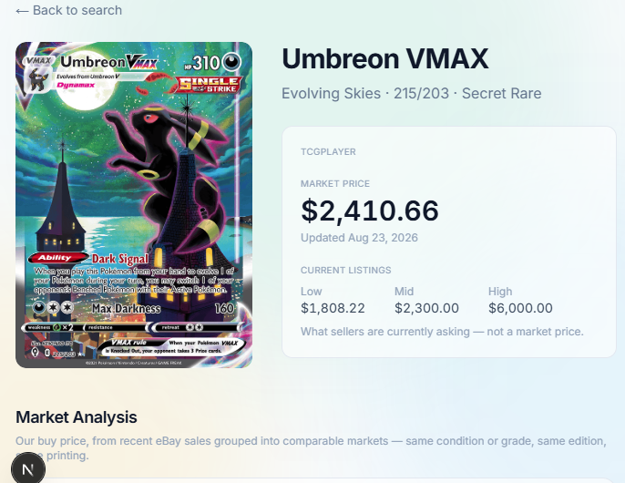

Projects
A few of the things I've been building lately. Most of them start the same way — I run into something I wish existed and (attempt) to make it myself.
League of Legends Pre-Game Win Probability Estimator
A model that estimates each team's chance of winning before the game even loads in.

Champion select ends, the loading screen comes up, and everyone in the lobby has already made up their mind about whether the game is winnable. I wanted to know how much of that gut feeling is actually justified — so I built a model that looks at the ten players and the two team compositions, and assigns the win probabilities before any gameplay.
The data comes from Diamond+ ranked games across several regions, pulled through the Riot Games API. The tricky part is that a draft isn't just ten independent picks — champions matter because of how they fit together, so the model learns its own sense of each champion's identity (its role, its style, scaling, etc.) and reads the draft as a whole rather than as a list. That gets combined with what's known about the players themselves (e.g. winrate) to produce the final number.
For proper practice and evaluation I also compared the transformer to simpler baseline models.
Pokémon App

I got into the hobby this summer, and after vending at a few events I realized that the current “standard,” Collectr, is… unsatisfactory. I noticed that with most cards, to make sure I had a fair comp, I would first check Collectr, then TCGPlayer, then eBay last sold. And then an epiphany… what is even the point of step 1 here if it's so unreliable that I feel the need to check two other sources? And so me and my best friend (Claude) tapped in.
The app right now is still most definitely a WIP, but I think we've made some good progress. An issue I think is at this point unavoidable is that the app is realistically unscalable. Recently eBay started gatekeeping their API, and so I have some serious issues when it comes to scraping for the last sold prices. With that being said, I should still be able to build a prototype, and at this point my goal is to get a working version for personal use. I'd imagine this should at least be feasible.
- Card search, down to the set, collector number, and rarity.
- TCGPlayer market price shown next to what sellers are currently asking.
- A buy price built from recent eBay sales, grouped so you're only comparing like for like — same condition or grade, same edition, same printing.